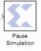

Pause Simulation This block is listed in the following Xilinx Blockset libraries: Tools and Index. The Xilinx Pause Simulation block pauses the simulation when the input is non-zero. The block accepts any Xilinx signal type as input. When the simulation is paused, it can be restarted by selecting the Start button on the model toolbar. Block Parameters There are no parameters for this block.